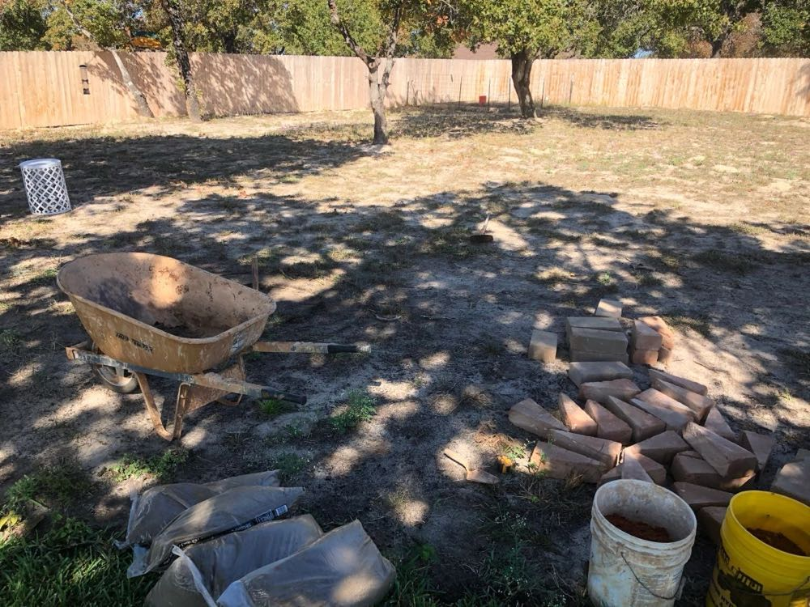
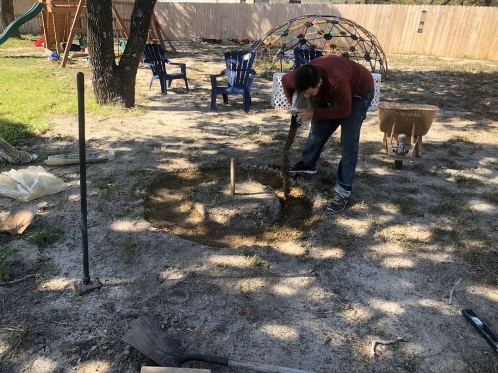
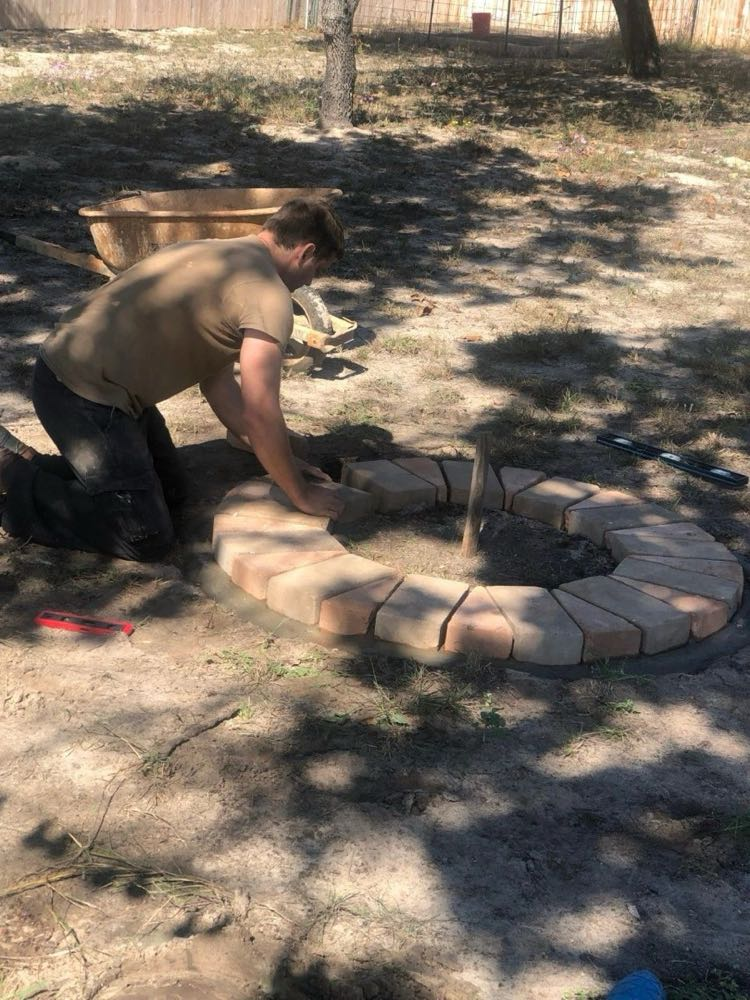
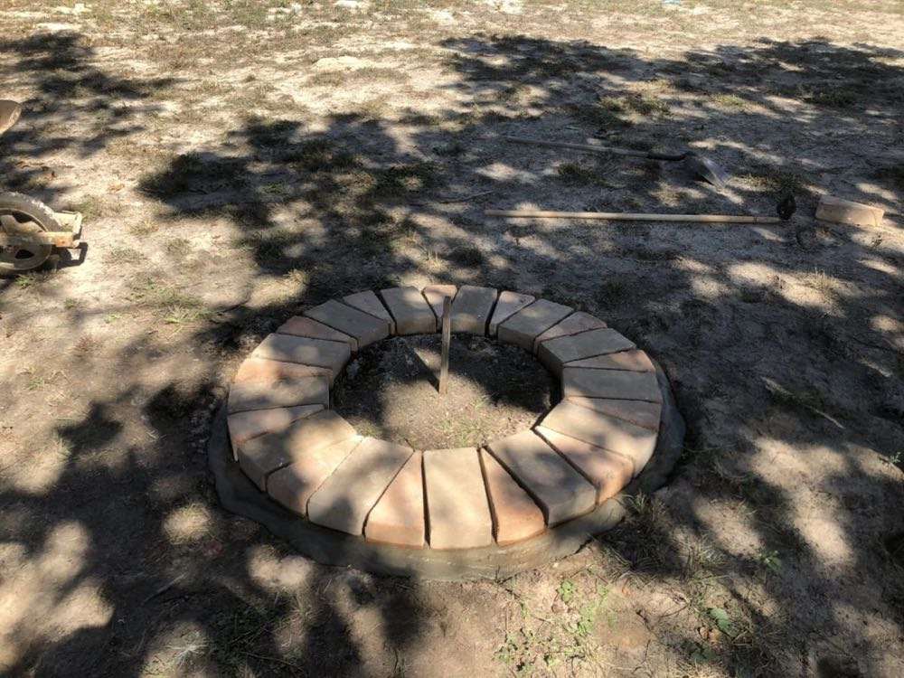
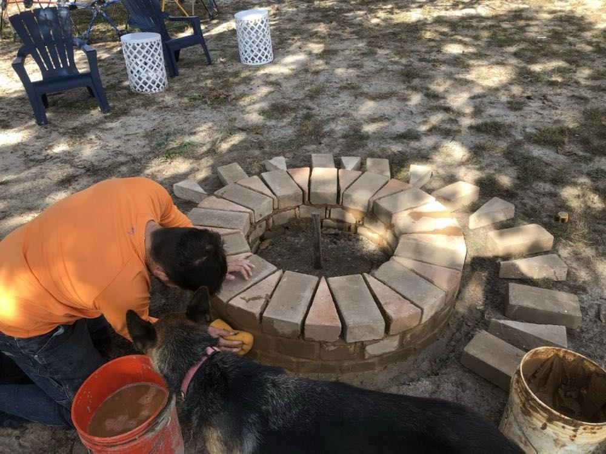
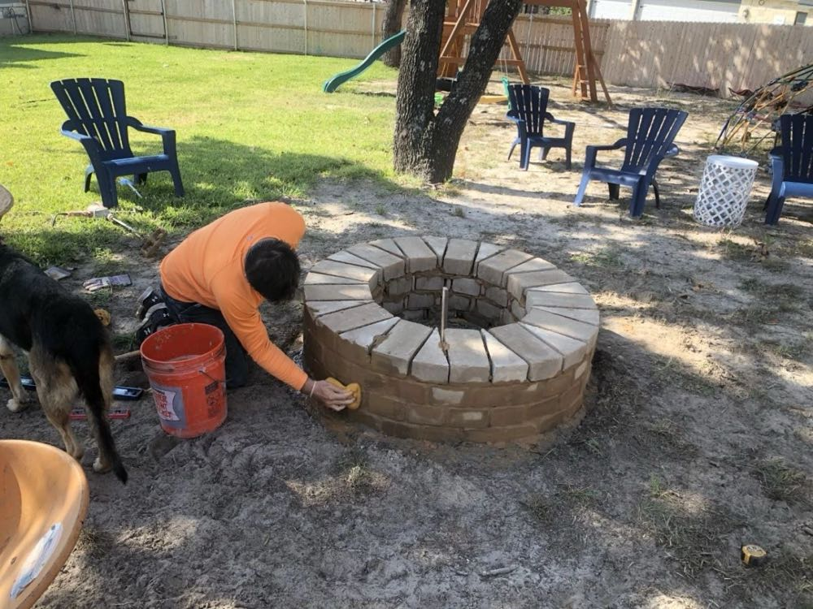
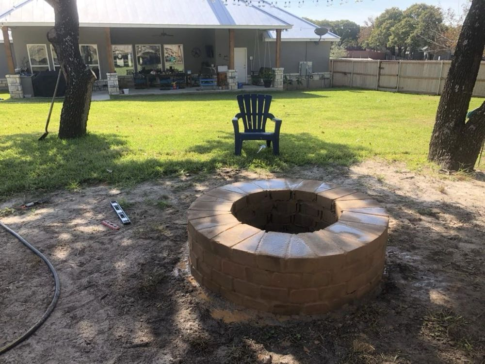
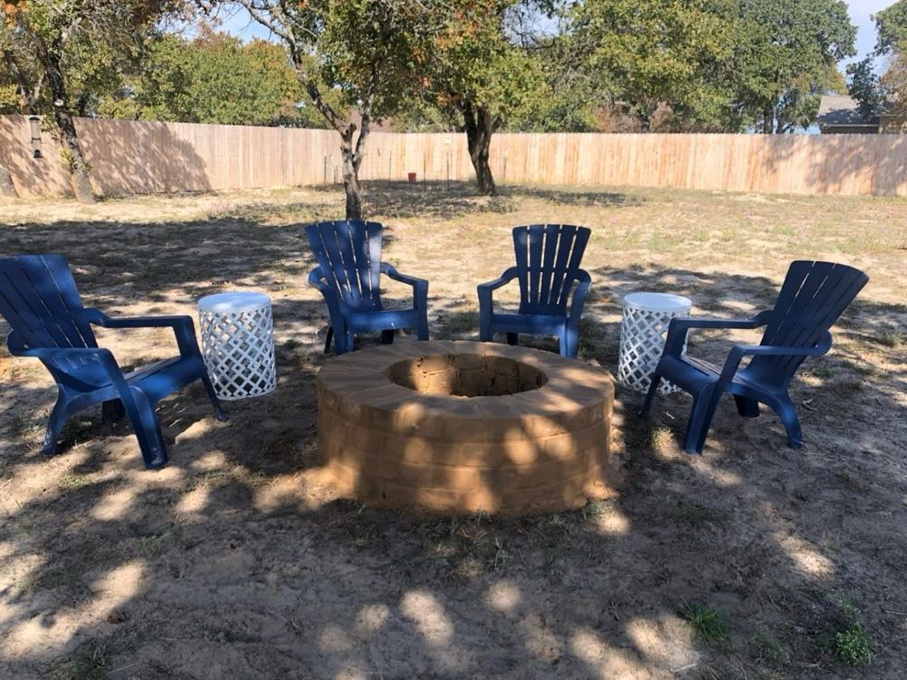

I recently built an outdoor CEB fire pit for a family friend. Fire pits are a nice easy 2-day project that you can do with cement-stabilized compressed earth blocks; believe it or not, it takes two trips in a half-ton truck to deliver 104 of our smallest (6" x 12" x 3.5") CEBs!
The first thing we had to do was figure out how to make a round firepit with rectangular blocks. The easiest way I could think to do it was to cut half the blocks into a triangle shape...so I took out the chop saw and started cutting. A circular saw or a chop saw works well for cutting cement-stabilized CEBs. You just have to put a masonry blade on it. A masonry blade for our 14-inch chop saw costs about $100 at Lowes and will make 1,000 cuts before wearing out.
Once we had the blocks cut, we could load up the truck and move everything to the build site, which was about 30 miles away. In the picture below you can see the blocks for the first course, the bags of decomposed granite that would be used for the foundation, and a couple of buckets of sandy soil that would be used to make slurry for joining the blocks together.

We traced out the circle pattern by driving a wooden stake in the ground and then affixing a 30" piece of string to the stake to draw out the footprint of the fire pit. Then we dug out about 5" of soil and backfilled it with decomposed granite which we tamped into place; you can see the hand tamper on the left in the picture below.

After setting the foundation material, we mixed up some cement-stabilized earth to set the first course of earth blocks into place. To do this, we just used a drill with a mixing attachment and blended the material in a 5-gallon bucket. I didn't bring enough dirt for the mix, but we were able to use the unlimited supply of sandy native earth right there on site to plus-up our stabilized-slurry mixture for the first course.


Once the first course was set, it was just a matter of mixing up more stabilized earth slurry and putting the blocks down. That and making another trip back to the shop to get the other 52 (900 pounds worth!) earth blocks. You can use the earthen slurry just like mortar. It helps to have a wet sponge on hand to wipe away the excess slurry before it dries out.



By mid-afternoon on Sunday we had finished a beautiful earth block fire pit that all the family and friends could enjoy.


Cement-stabilized compressed earth blocks behave just like normal fire bricks but they are much less expensive ($2 each instead of $10 each) and MUCH more beautiful. They're great for building fire pits, fireplaces (indoor and outdoor), ovens (hornos), smokers, and just about anything else you can dream up!